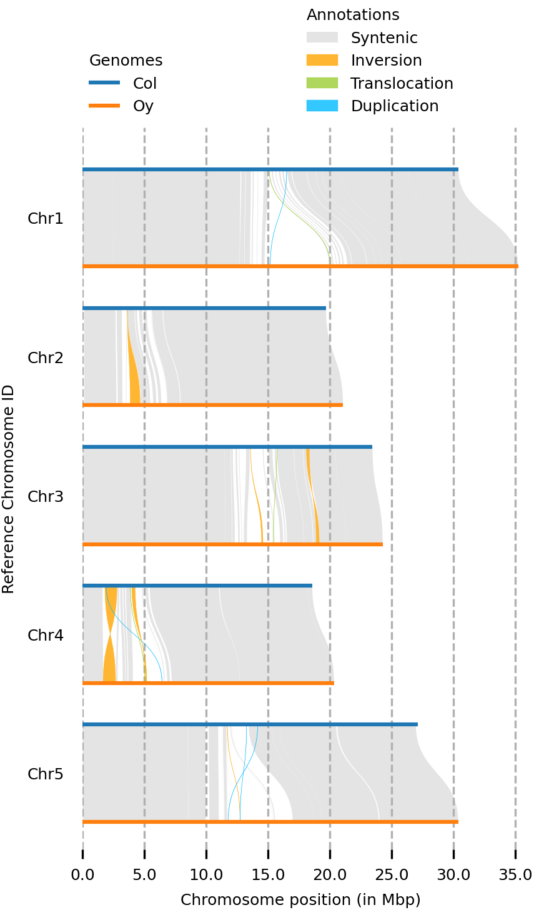
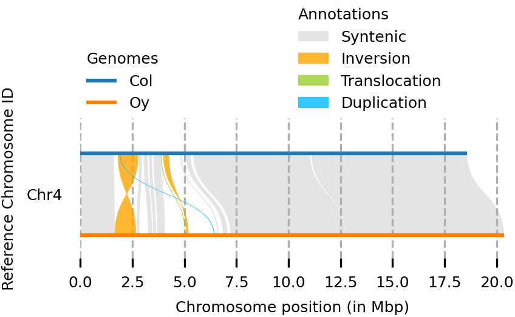
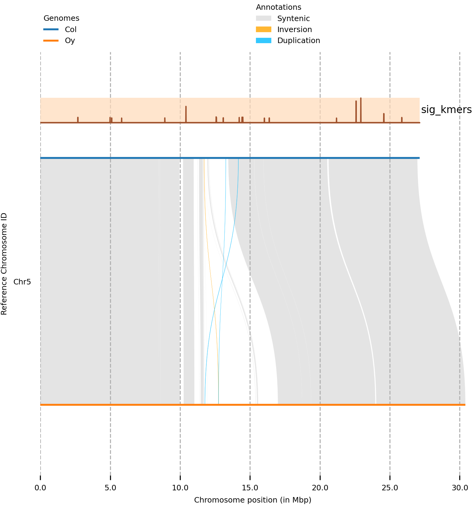

Visualizing Arabidopsis whole-genome alignments
Introduction
Interesting phenotypes can be encoded in the genome of organisms. Therefore, it is often interesting to visualize differences between genomes of different species, or of individuals within the same species. These differences could be small, such as single nucleotide polymorphisms, but can also be structural rearrangements of entire chromosomes.
In a recent publication, Lian et al 2024 Nature Genetics investigated structural rearrangements in a panel of 69 Arabidopsis thaliana accessions (Fig 3). In addition, they published a chromosome level assembly of Arabidopsis accession Oy-0. This accession is used in several research groups of the University of Amsterdam, so it is interesting to show genome rearrangements between this accession, and the model accession Col-0. The paper uses plotsr software to plot synteny across chromosomes. The syntenic regions are first identified using syri.
Software used:
The data
I downloaded the Arabidopsis Col-0 TAIR10.1 and Oy-0 genome assemblies with the following script, moved them to a folder called data, and unzipped them:
(syri) [mpaauw@omics-h0 02_Ath_synteny]$ cat download_genoomes.sh
wget https://ftp.ncbi.nlm.nih.gov/genomes/all/GCA/036/927/085/GCA_036927085.1_ASM3692708v1/GCA_036927085.1_ASM3692708v1_genomic.fna.gz
wget https://ftp.ncbi.nlm.nih.gov/genomes/all/GCF/000/001/735/GCF_000001735.4_TAIR10.1/GCF_000001735.4_TAIR10.1_genomic.fna.gz
mv GC* data/
cd data/
gunzip *.gzThe synteny software expects that homologous chromosomes in the two genomes have exactly the same chromosome id. Unfortunately, this is almost never the case if you download genomes from different organisms and from different sources. To rename the fasta headers, I used the following sed commands. In addition, I removed the mitochondrial and chromosomal DNA sequences.
(syri) [mpaauw@omics-h0 data]$ cat chromosome_renamer.sh
sed -i 's/CM072627.1.*chromosome 1.*/Chr1/' GCA_036927085.1_ASM3692708v1_genomic.fna
sed -i 's/CM072628.1.*chromosome 2.*/Chr2/' GCA_036927085.1_ASM3692708v1_genomic.fna
sed -i 's/CM072629.1.*chromosome 3.*/Chr3/' GCA_036927085.1_ASM3692708v1_genomic.fna
sed -i 's/CM072630.1.*chromosome 4.*/Chr4/' GCA_036927085.1_ASM3692708v1_genomic.fna
sed -i 's/CM072631.1.*chromosome 5.*/Chr5/' GCA_036927085.1_ASM3692708v1_genomic.fna
sed -i 's/NC_003070.9.*chromosome 1.*/Chr1/' GCF_000001735.4_TAIR10.1_genomic.fna
sed -i 's/NC_003071.7.*chromosome 2.*/Chr2/' GCF_000001735.4_TAIR10.1_genomic.fna
sed -i 's/NC_003074.8.*chromosome 3.*/Chr3/' GCF_000001735.4_TAIR10.1_genomic.fna
sed -i 's/NC_003075.7.*chromosome 4.*/Chr4/' GCF_000001735.4_TAIR10.1_genomic.fna
sed -i 's/NC_003076.8.*chromosome 5.*/Chr5/' GCF_000001735.4_TAIR10.1_genomic.fna
(syri) [mpaauw@omics-h0 data]$ cat contig_remover.sh
sed -i '/>JAWQTX010000006.1/,/^>/d' GCA_036927085.1_ASM3692708v1_genomic.fna
sed -i '/>JAWQTX010000007.1/,/^>/d' GCA_036927085.1_ASM3692708v1_genomic.fna
sed -i '/>NC_037304.1/,/^>/d' GCF_000001735.4_TAIR10.1_genomic.fna
sed -i '/>NC_000932.1/,/^>/d' GCF_000001735.4_TAIR10.1_genomic.fnaLet’s do sanity check: did this work? We do this by using grep, a sophisticated command line search tool, to search for the character >, in all files that are called G*.fna. Note that the * is used as a ‘wildcard’ and we match both genomes with this statement.
(syri) [mpaauw@omics-h0 data]$ grep ">" G*.fna
GCA_036927085.1_ASM3692708v1_genomic.fna:>Chr1
GCA_036927085.1_ASM3692708v1_genomic.fna:>Chr2
GCA_036927085.1_ASM3692708v1_genomic.fna:>Chr3
GCA_036927085.1_ASM3692708v1_genomic.fna:>Chr4
GCA_036927085.1_ASM3692708v1_genomic.fna:>Chr5
GCF_000001735.4_TAIR10.1_genomic.fna:>Chr1
GCF_000001735.4_TAIR10.1_genomic.fna:>Chr2
GCF_000001735.4_TAIR10.1_genomic.fna:>Chr3
GCF_000001735.4_TAIR10.1_genomic.fna:>Chr4
GCF_000001735.4_TAIR10.1_genomic.fna:>Chr5That looks good. In both genomes, the chromosomes are called Chr1, and so forth.
Aligning the genomes
The first step is to do a whole-genome alignment between the two genomes. I followed the instructions at plotsr github to do this. We use the software minimap2. This is a quick sequence alignment program and is in installed in base environment on Crunchomics. The alignments are sorted and indexed using samtools. Then syri is used to call structural variants based on the alignment between the two genomes.
minimap2 -ax asm5 -t 16 --eqx data/GCF_000001735.4_TAIR10.1_genomic.fna data/GCA_036927085.1_ASM3692708v1_genomic.fna | samtools sort -O BAM > Col_Oy.bam
samtools index Col_Oy.bam
syri -c Col_Oy.bam -r data/GCF_000001735.4_TAIR10.1_genomic.fna -q data/GCA_036927085.1_ASM3692708v1_genomic.fna -F B --prefix Col_OyThis produces several output files:
(syri) [mpaauw@omics-h0 02_Ath_synteny]$ ls Col_Oysyri.*
Col_Oysyri.log Col_Oysyri.out Col_Oysyri.summary Col_Oysyri.vcfLet’s have a look at the summary.
(syri) [mpaauw@omics-h0 02_Ath_synteny]$ cat Col_Oysyri.summary
#Structural annotations
#Variation_type Count Length_ref Length_qry
Syntenic regions 95 107247075 107294458
Inversions 14 1504073 2295146
Translocations 110 566651 566464
Duplications (reference) 62 267859 -
Duplications (query) 528 - 898113
Not aligned (reference) 250 9765159 -
Not aligned (query) 696 - 20371617
#Sequence annotations
#Variation_type Count Length_ref Length_qry
SNPs 405790 405790 405790
Insertions 42410 - 904020
Deletions 41893 867402 -
Copygains 26 - 485440
Copylosses 11 15494 -
Highly diverged 3961 18041314 18376872
Tandem repeats 2 518 599Ok, so there are quite a few structural variants between Col-0 and Oy-0! The syri.out file contains the details of all the variants individually.
Plotting the structural variants
We can then go ahead and visualize the structural variants using the plotsr software. First we create the genomes.txt file containing info about where the software can find both genomes, how to call them, and specify how they should be plotted.
(syri) [mpaauw@omics-h0 02_Ath_synteny]$ cat genomes.txt
#file name tags
data/GCF_000001735.4_TAIR10.1_genomic.fna Col lw:1.5
data/GCA_036927085.1_ASM3692708v1_genomic.fna Oy lw:1.5
# then we run the software: all chromosomes
(syri) [mpaauw@omics-h0 02_Ath_synteny]$ plotsr --sr Col_Oysyri.out --genomes genomes.txt -o all_chromosomes.png
# or just chromosome 4
(syri) [mpaauw@omics-h0 02_Ath_synteny]$ plotsr --sr Col_Oysyri.out --genomes genomes.txt --chr Chr4 -o chr4.png
So, while most of the Chr 4 of the two accessions are syntenic, we can find two inversions, a translocation, and some parts that don’t have a match at all at the chromosome of the other accession.
Adding tracks with other data
You can add tracks of data, such as gene annotations, or SNP density, across the genomes. Perhaps you can then discover interesting genomic features that colocalize with the structural variant breakpoints. Here, we have a dataset of short sequences (k-mers) that were mapped to the Col-0 reference genome using the mapping software bowtie. We need to transform the .bam file with the mappings to a .bed file. Then, we need to add “Chr” to the chromosome identifiers in the bed file.
bedtools bamtobed -i mapping.sorted.bam > mapping.sorted.bed
awk '{print "Chr"$1 "\t" $2 "\t" $3 "\t" $4}' mapping.sorted.bed > mapping.sorted.chr.bed
(syri) [mpaauw@omics-h0 02_Ath_synteny]$ head mapping.sorted.chr.bed
Chr1 753215 753246 sequence_1703
Chr1 753216 753247 sequence_761
Chr1 753217 753248 sequence_1521Let’s continue by generating a tracks.txt file, similar to the genomes.txt file to tell plotsr where to find the track data, how to call the track, and some graphical settings of the track.
(syri) [mpaauw@omics-h0 02_Ath_synteny]$ cat tracks.txt
#file name tags
mapping.sorted.chr.bed sig_kmers bw:10000;nc:black;ns:8;lc:sienna;lw:1;bc:peachpuff;ba:0.7
(syri) [mpaauw@omics-h0 02_Ath_synteny]$ plotsr --sr Col_Oysyri.out --genomes genomes.txt --tracks tracks.txt --chr Chr5 -W 6 -o Chr5_kmertrack.png
Cool! In this case, there is no clear association between our mapped k-mers and structural variation between Col-0 and Oy-0 on this chromosome.
Further reading
- syri, a software package to identify structural rearrangements.
- plotsr, a software package to plot the rearrangements detected by
syri. - Lian et al 2024 Nature Genetics.
- clinker, a versatile synteny visualization tool that works on smaller scales (gene clusters).